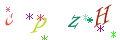

一个简单的验证码生成类（PHP）
可配置项：
/** * $_fontfile=''; // 字体文件 * $_size=20; // 字体大小 * $_width=120; // 画布宽度 * $_height=40; // 画布高度 * $_length=4; // 验证码长度 * $_image=null; // 画布资源 * // 干扰元素 * $_snow=0; // 雪花个数 * $_pixel=0; // 像素个数 * $_line=0; // 线段个数 */
其中字体文件路径必须配置。
Captcha.class.php
Class Captcha{
// 字体文件
private $_fontfile='';
// 字体大小
private $_size=20;
// 画布宽度
private $_width=120;
// 画布高度
private $_height=40;
// 验证码长度
private $_length=4;
// 画布资源
private $_image=null;
// 干扰元素
// 雪花个数
private $_snow=0;
// 像素个数
private $_pixel=0;
// 线段个数
private $_line=0;
/**
* 初始化数据
* @param array $config [description]
*/
public function __construct($config=array()){
if(is_array($config)&&count($config)>0){
// 检测字体文件是否存在并且可读
if(isset($config['fontfile'])&&is_file($config['fontfile'])&&is_readable($config['fontfile'])){
$this->_fontfile=$config['fontfile'];
}else{
return false;
}
// 检测是否设置字体大小
if(isset($config['size'])&&$config['size']>0){
$this->_size=(int)$config['size'];
}
// 检测是否设置画布宽和高
if(isset($config['width'])&&$config['width']>0){
$this->_width=(int)$config['width'];
}
if(isset($config['height'])&&$config['height']>0){
$this->_height=(int)$config['height'];
}
// 检测是否设置验证码长度
if(isset($config['length'])&&$config['length']>0){
$this->_length=(int)$config['length'];
}
// 配置干扰元素
if(isset($config['snow'])&&$config['snow']>0){
$this->_snow=(int)$config['snow'];
}
if(isset($config['pixel'])&&$config['pixel']>0){
$this->_pixel=(int)$config['pixel'];
}
if(isset($config['line'])&&$config['line']>0){
$this->_line=(int)$config['line'];
}
$this->_image=imagecreatetruecolor($this->_width, $this->_height);
return $this->_image;
}else{
return false;
}
}
/**
* 得到验证码
* @return [type] [description]
*/
public function getCaptcha(){
$white=imagecolorallocate($this->_image, 255, 255, 255);
// 填充矩形
imagefilledrectangle($this->_image, 0, 0, $this->_width, $this->_height, $white);
// 生成验证码
$str=$this->_generateStr($this->_length);
if(false==$str){
return false;
}
$fontfile=$this->_fontfile;
// 绘制验证码
for($i=0;$i<$this->_length;$i++){
$size=$this->_size;
$angle=mt_rand(-30,30);
$x=ceil($this->_width/$this->_length)*$i+mt_rand(5,10);
$y=ceil($this->_height/1.5);
$color=$this->_getRandColor();
// $text=mb_substr($str,$i,1,'utf-8');
$text=$str{$i};
imagettftext($this->_image, $size, $angle, $x, $y, $color, $fontfile, $text);
}
if($this->_snow){
// 使用雪花当做干扰元素
$this->_getSnow();
}else{
if($this->_pixel){
$this->_getPixel();
}
if($this->_line){
$this->_getLine();
}
}
// 输出图像
ob_clean();
header('content-type:image/png');
imagepng($this->_image);
imagedestroy($this->_image);
return strtolower($str);
}
/**
* 产生雪花
* @return [type] [description]
*/
private function _getSnow(){
for($i=1;$i<=$this->_snow;$i++){
imagestring($this->_image, mt_rand(1,5), mt_rand(0,$this->_width), mt_rand(0,$this->_height), '*', $this->_getRandColor());
}
}
/**
* 绘制像素
* @return [type] [description]
*/
private function _getPixel(){
for($i=1;$i<=$this->_pixel;$i++){
imagesetpixel($this->_image, mt_rand(0,$this->_width), mt_rand(0,$this->_height), $this->_getRandColor());
}
}
/**
* 绘制线段
* @return [type] [description]
*/
private function _getLine(){
for($i=1;$i<=$this->_line;$i++){
imageline($this->_image, mt_rand(0,$this->_width), mt_rand(0,$this->_height), mt_rand(0,$this->_width), mt_rand(0,$this->_height), $this->_getRandColor());
}
}
/**
* 产生验证码字符
* @param integer $length 验证码长度
* @return string 随机字符
*/
private function _generateStr($length=4){
if($length<1||$length>30){
return false;
}
$chars=array(
'a','b','c','d','e','f','g','h','k','m','n','p','x','y','z',
'A','B','C','D','E','F','G','H','K','M','N','P','X','Y','Z',
'2','3','4','5','6','7','8','9'
);
$str=join('',array_rand(array_flip($chars),$length));
return $str;
}
private function _getRandColor(){
return imagecolorallocate($this->_image, mt_rand(0,255), mt_rand(0,255), mt_rand(0,255));
}
}然后在应用中使用这个类：
captcha.php
require 'Captcha.class.php'; ob_clean(); $config=array( 'fontfile'=>'INFROMAN.TTF', // 'snow'=>10, 'pixel'=>100, 'line'=>5 ); $captcha=new Captcha($config); $captcha->getCaptcha();
就可以生成类似这样的验证码：

或者：
getCaptcha()会以字符串的形式返回验证码的值。
比较简单的一种验证码，用了PHP的扩展GD库。